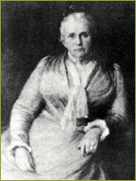

Trained Nurses for San Francisco
Nationally the impetus for nursing reform grew out of the experiences of the Civil War and the proliferation of hospitals in the second half of the nineteenth century. In 1873, the first class of "trained" nurses graduated from the New England Hospital For Women And Children, and in that same year three other large eastern hospitals, Bellevue (New York), Massachusetts General (Boston) and, the New Haven Hospital (Connecticut) developed training programs. By 1880 there were fifteen nurse's training schools in the nation.
San Francisco’s experience in training nurses was shaped by the existence of female leadership from the growing number of locally active women physicians, some graduates of the UC Medical Department and some trained at various eastern medical schools. San Francisco physician Charlotte Amanda Blake Brown took her medical training in Philadelphia and was, to her colleagues, “ a most favorably known surgeon, obstetrician, medical organizer and good citizen of San Francisco.” In 1875, she joined with her daughter—physician Adelaide Brown— to develop the Pacific Dispensary for Women and Children, which subsequently (1879) became the Women’s and Children’s Hospital. This was a unique institution, governed by an exclusively female medical staff and it offered rare opportunities for women physicians to gain postgraduate experience.

The hospital moved to a more permanent site at California Street and Maple Street in 1887. In 1881 Dr. Charlotte Brown traveled east to investigate nursing education in eastern hospitals, and in 1882 opened a two-year training school for nurses at Women’s and Children’s Hospital, the first formal nurse’s training school in the city. In 1903, several graduates from this and other local schools founded the California Nurses Association. In the last decade of the nineteenth century other San Francisco hospitals developed training schools: City-County Hospital, 1891; Lane Hospital, 1893; French hospital, 1895; Homeopathic Hospital, 1896, and St. Luke’s Hospital in 1899. By the turn of the century 452 nurse’s training schools had been founded in the United States, but, because no hospital was exclusively under the teaching control of the UC Medical Department faculty, no nursing school formed under its sponsorship. In their daily activities in the wards and in surgery, UC Medical Department students, interns, and faculty were becoming well aware of the contributions of trained graduate nurses in the hospital setting.
Charlotte Blake Brown
>> Growth of the Affiliated Colleges
{% include footer.html %}